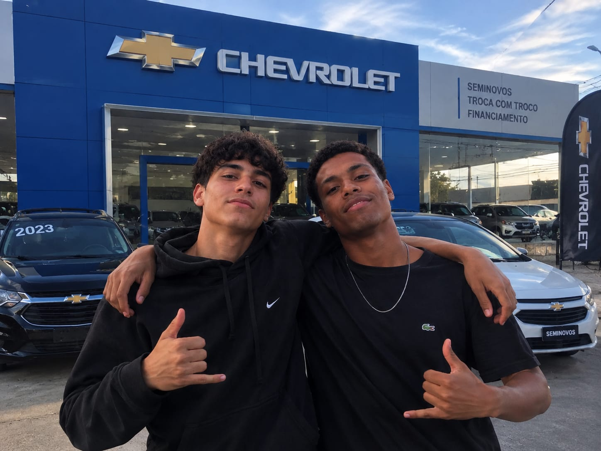
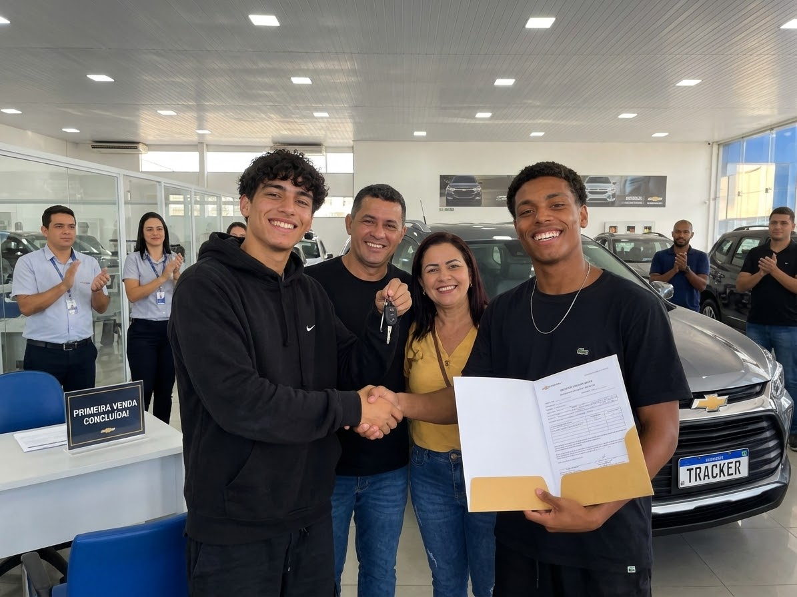
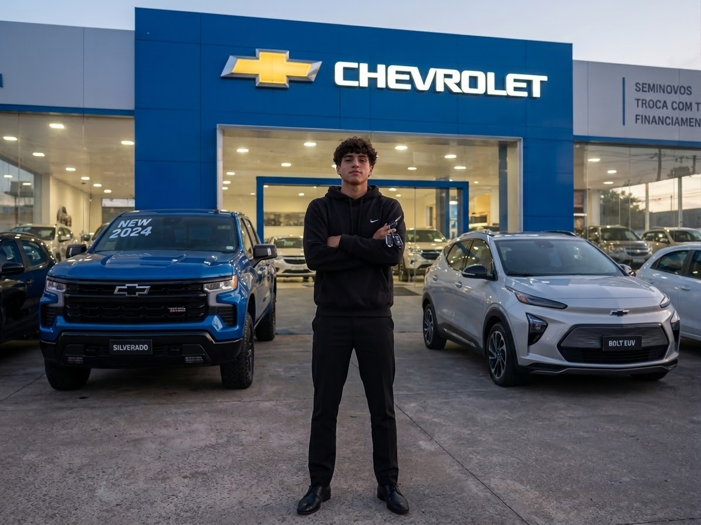

CONHEÇA A NOSSA HISTÓRIA
COMO TUDO COMEÇOU (2010)
A história da AutoStar Chevrolet começou em 2010, fruto da visão compartilhada de dois grandes apaixonados por carros:Rafael e seu antigo sócio, Marcos. Com recursos modestos, mas muita determinação, eles decidiram abrir um pequeno showroom focado em atendimento humanizado e na paixão pela marca Chevrolet.
Nos primeiros anos, Rafael cuidava diretamente do atendimento aos clientes e das negociações, enquanto Marcos gerenciava a parte financeira e de logística. A combinação de trabalho duro, transparência e respeito pelo consumidor fez com que o nome "AutoStar" rapidamente ganhasse a confiança dos motoristas da região.


UMA NOVA ERA E CRESCIMENTO
A partir da saída de seu sócio, Rafael assumiu a liderança integral da AutoStar Chevrolet. Com uma visão focada em inovação, excelência e na experiência do cliente, ele reestruturou a concessionária, investiu na capacitação da equipe e trouxe para a loja as melhores tecnologias em atendimento automotivo e pós-venda.
Sob a gestão direta de Rafael, a AutoStar deixou de ser apenas uma loja de carros para se tornar uma verdadeira referência regional em qualidade, transparência e realização de sonhos.
MAIS DE 15 ANOS DE TRADIÇÃO
Hoje, com mais de 15 anos de história, a AutoStar Chevrolet orgulha-se de fazer parte da vida de milhares de famílias. Seja na conquista do primeiro 0 KM, na escolha do seminovo ideal ou na proteção e manutenção do seu veículo, nossa missão continua a mesma desde o primeiro dia: trazer a força, a inovação e a tradição Chevrolet com o carinho e a dedicação que você merece.
